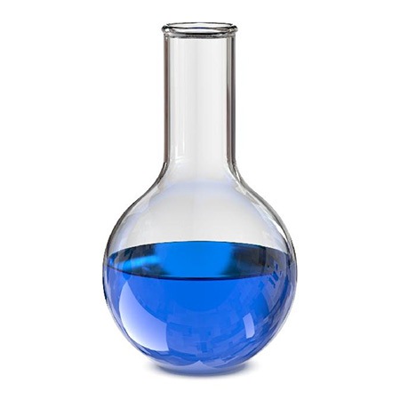

Алхимия это псевдонаука, которая была популярна в средние века, однако не смотря на то, что она ставила перед собой цель создание несуществующего философского камня она смогла дать много чего полезного для нынешней классической химии.
- химия
- алхимия
- философский камень
- алхимические порошки
химия 
Алхимия часто упоминается в фентези.
Пауло Коэльо автор книги Алхимик.
Алхимия была популярна в средневековье, но первые упоминания о ней появились еще до нашнй эры.
Практически все псевдонауки прошлого не нашли практического примеения в асящем, но алхимия в этом деле стоит особняком.